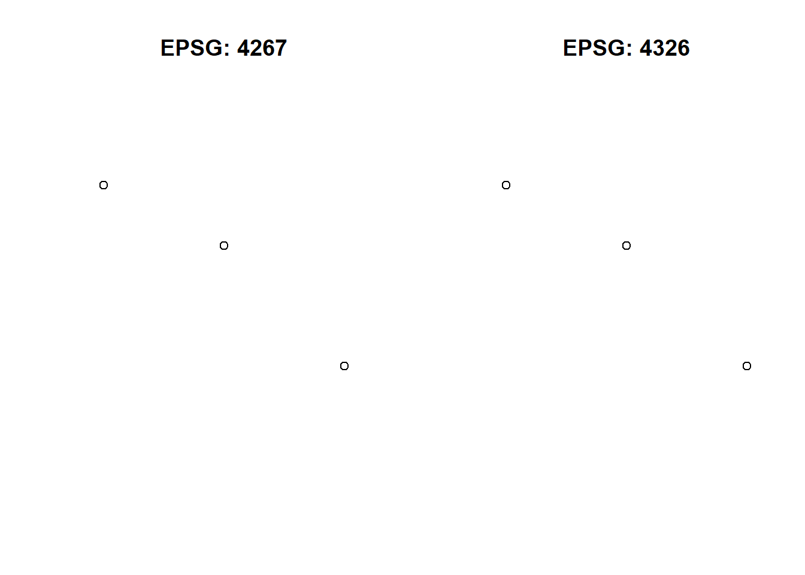

Lesson 4 Spatial Data Structures
In the realm of geoinformatics, spatial data stands as a cornerstone, offering a lens through which we can view, analyze, and interpret the world around us. At this point in your Master’s, you are already familiar with the basic spatial entities of: points, lines, and polygons. These fundamental structures, while simple in concept, form the bedrock of complex spatial analyses and visualizations.
R, with its rich ecosystem of packages, offers a unique perspective on spatial data. Packages like sf, terra, stars, and spatstat have been game-changers, allowing us to handle spatial vector, raster and multidemensional data with unprecedented ease and flexibility.
In this lesson, you will get to know the following spatial data structures in R:
- Vector data structures based on the simple feature specification implemented in package sf
- Raster data structures as provided by the package terra
You will also learn how to retrieve, assign and modify coordinate systems, projections and transformations of spatial data structures.
4.1 Vector Data Structures:
Spatial data structures are the foundation upon which geospatial information is built. They provide a systematic framework for organizing and representing geographical entities, ensuring that they can be efficiently processed, analyzed, and visualized. In this section, we’ll delve into vector data structures, which are essential for representing discrete spatial entities.
The most common geometry types are points, lines and polygons and their respective “multi” versions.
4.1.1 Points:
Points are fundamental in geospatial analysis. They are the simplest spatial entities, representing a singular location in space. They have no dimensions, meaning they don’t possess length, width, or area. Using the sf package, you can create and manipulate point data with ease:
# Create a point
point <- sf::st_point(c(5, 5))
# Convert to sf object
point_sf <- sf::st_sf(geometry = sf::st_sfc(point))st_point, st_sf and st_sfc are situated within the library sf. This helps avoiding ambiguities in the case functions from different loaded libraries have identical names.
The function st_point creates a simple feature object from a numeric vector. The object is of the same nature as the numeric vector c(5,5). To convert to an sf-object, the function st_sf is used.
Sf-object are similar in structure as data frames. However, in contrast to data frames, sf-objects have an additional geometry column. The sf-object point_sf (created by the code above) contains a single point geometry and no fields:
point_sf## Simple feature collection with 1 feature and 0 fields
## Geometry type: POINT
## Dimension: XY
## Bounding box: xmin: 5 ymin: 5 xmax: 5 ymax: 5
## CRS: NA
## geometry
## 1 POINT (5 5)In principle sf-objects can be treated like data frames. Accordingly, data frame syntax is used to assign fields (table columns) to geometries:
point_sf$name <- c("my location")To stay in GIS terms, records (rows) in a sf-object table may be called features. Features can be composed of multiple geometries:
# Create three points at locations 3/4, 5/3 and 7/1 as multipoint geometry
point_multi <- sf::st_multipoint(matrix(c(3, 5, 7, 4, 3, 1), c(3, 2)), dim = "XY")
# Convert to sf object
point_sf_multi <- sf::st_sf(geometry = sf::st_sfc(point_multi))
plot(point_sf_multi)
Plotting the metadata of sf-object point_sf_multi in the console reveals that Geometry type is Multipoint and that no coordinate reference system has been defined (CRS: NA):
point_sf_multi## Simple feature collection with 1 feature and 0 fields
## Geometry type: MULTIPOINT
## Dimension: XY
## Bounding box: xmin: 3 ymin: 1 xmax: 7 ymax: 4
## CRS: NA
## geometry
## 1 MULTIPOINT ((3 4), (5 3), (...Alternatively, the function st_crs may be used extract coordinate system information from an sf-object:
sf::st_crs(point_sf_multi)## Coordinate Reference System: NAIn case when a CRS is missing or the wrong CRS is set, the function st_crs is used:
# Assign WGS84 as CRS
# 4326 is the EPSG code of WGS84
sf::st_crs(point_sf_multi) <- 4326EPSG-Codes of other reference systems can be found here.
Now we transform the sf-object to EPSG 3416 (Austrian Lambert Projection) with function st_transform:
# Assign NAD27 as CRS
point_sf_multi_transform <- sf::st_transform(point_sf_multi, 3416)Eventually we can compare the two sf-objects with different coordinate systems:
par(mfrow=c(1,2)) # both plots together
plot(sf::st_geometry(point_sf_multi_transform), main = "EPSG: 3416")
plot(sf::st_geometry(point_sf_multi), main = "EPSG: 4326")
4.1.2 Lines:
Lines are sequences of points. They’re instrumental in representing pathways, routes, or any linear feature. Here’s how you can create a line using sf:
# Create a line from a matrix of coordinates
line <- st_linestring(matrix(1:6, 3, 2))
# Convert to spatial feature
line_sf <- st_sf(geometry = st_sfc(line))
# Plot the line
plot(line_sf)
4.1.3 Polygons:
Polygons are closed shapes, perfect for representing areas with defined boundaries. Here’s a demonstration using sf and its st_polygon function:
# Create a matrix of coordinates
coords <- matrix(c(2,2, 4,4, 4,2, 2,2), ncol = 2, byrow = TRUE)
# Create a list of matrices (in this case, just one matrix)
list_of_coords <- list(coords)
# Create the polygon
polygon <- st_polygon(list_of_coords)
# Convert to spatial feature
polygon_sf <- st_sf(geometry = st_sfc(polygon))
# Plot the polygon
plot(polygon_sf)
I npraxitce you wont define vector geometries manually. In lesson xy read and write you will learn how to create sf objects in R from Shapefiles
4.1.3.1 Quiz: Understanding Spatial Data Integrity
The code above successfully creates and plots a polygon. However, imagine if the last coordinate in the coords matrix was mistakenly omitted, leading to an error…
Consider following Questions:
- What error would you expect to encounter if the last coordinate was omitted?
- Why is the last coordinate crucial for the creation of the polygon?
Solution:
- If the last coordinate was omitted, you would encounter the following error:
Error in MtrxSet(x, dim, type = "POLYGON", needClosed = TRUE) : polygons not (all) closed
A breakdown of what the error message is conveying:
MtrxSet(x, dim, type = "POLYGON", needClosed = TRUE): This is the internal function being called to set or validate the matrix representation of the polygon.type = "POLYGON": This indicates that the data structure being worked on is in fact a Polygon.needClosed = TRUE: This is a condition set within the function to ensure that polygons are closed. It checks if the starting and ending coordinates of the polygon are the same.polygons not (all) closed: This is the main error message, indicating that one or more polygons in your data are not closed, i.e., their starting and ending coordinates don’t match.
In practical terms, if you’re creating or manipulating polygons, you need to ensure that each polygon’s last coordinate is the same as its first coordinate. If not, many spatial operations, analyses, or visualizations might produce incorrect or unexpected results!
- The last coordinate is crucial because it ensures that the polygon is closed, meaning its starting and ending coordinates are the same.
sf is predominantly used for vector data structures like points, lines, and polygons, terra is more oriented towards raster data. However, both packages can handle both vector and raster data to some extent. For vector operations, especially with points, lines, and polygons, sf is the preferred choice due to its comprehensive toolset and integration with the tidyverse ecosystem.
— Just a Test on how to write..
- Then we could go into for example:
4.2 Representing Spatial Data Structures in R
4.2.1 Simple Features with sf:
- How sf represents vector data structures.
- sf objects and their components.
- Maybe even a “food for thought”, WHY we use “sf” a lot.
- (Now, after we did the basics, get a bit deeper: Advanced operations with sf such as coordinate transformations (altough, this would fit very nicely in chapter 11 - see first), geometric operations, and spatial aggregations.)
4.3 Raster Data with terra:
- Now, we consinder how terra represents raster data structures.
- Differences between terra and older packages like raster. Information: (I actually think.. that’s a good idea, because even though, we didn’t cover raster. A lot of sources have used raster in the past, just to outline, that it was his predecessor) ?
- dive deeper: Advanced raster operations, raster-vector conversions, and raster algebra with** terra** and intro to stars?
—for example: ## Raster Data with Terra - Why Terra Over Older Packages like Raster? While many older resources may use the raster package, terra is its modern successor, offering several advantages:
- Efficiency: Terra is optimized for speed and uses less memory, making it more efficient for large datasets.
- Flexibility: It supports raster, vector, and time-series data, providing a one-stop solution for various spatial data types.
- Ease of Use: With a simplified and consistent syntax, terra is easier to pick up for newcomers.
- Comprehensive Functions: From raster algebra to resampling and reclassification, terra offers a wide array of functionalities.
- Integration: It’s designed to work seamlessly with other R packages, making it easier to integrate into larger workflows.
4.3.1 Reading Raster Data
# Load the terra package
library(terra)## Warning: Paket 'terra' wurde unter R Version 4.2.3 erstellt## terra 1.7.46# use the elevation tif file from "spData"
# "The raster data represents elevation in meters and uses WGS84 as a coordinate reference system."
elev <- system.file("raster/elev.tif", package = "spData")
elev <- rast(elev)
elev ## class : SpatRaster
## dimensions : 6, 6, 1 (nrow, ncol, nlyr)
## resolution : 0.5, 0.5 (x, y)
## extent : -1.5, 1.5, -1.5, 1.5 (xmin, xmax, ymin, ymax)
## coord. ref. : lon/lat WGS 84 (EPSG:4326)
## source : elev.tif
## name : elev
## min value : 1
## max value : 36plot(elev)  Once you’ve read the raster data, you can explore its properties using various functions:
Once you’ve read the raster data, you can explore its properties using various functions:
- ncol(r): Number of columns
- nrow(r): Number of rows
- res(r): Resolution (pixel size)
- crs(r): Coordinate Reference System
4.3.2 Basic Raster Operations
4.3.2.1 Cropping:
What is Raster Cropping? Raster cropping is the process of selecting a specific area (or “extent”) from a larger raster dataset. This is useful when you want to focus your analysis on a particular region.
Why Do We Need to Check the Original Raster’s Extent? Before cropping, it’s crucial to know the extent of the original raster. This ensures that the area you want to crop actually exists within the original raster. If the extents don’t overlap, you’ll get an error.
How to Check the Extent? You can use the ext() function from the terra package to check the extent of a raster.
# Check the extent of the original raster
ext(elev)## SpatExtent : -1.5, 1.5, -1.5, 1.5 (xmin, xmax, ymin, ymax)- How to Crop? Once you know the extent, you can specify a new extent within that range for cropping.
# Define a new extent that is within the original raster's extent
crop_extent <- ext(-1, 1, -1, 1) # These coordinates are within the original extent
# Crop the raster
elev_cropped <- crop(elev, crop_extent)
elev_cropped## class : SpatRaster
## dimensions : 4, 4, 1 (nrow, ncol, nlyr)
## resolution : 0.5, 0.5 (x, y)
## extent : -1, 1, -1, 1 (xmin, xmax, ymin, ymax)
## coord. ref. : lon/lat WGS 84 (EPSG:4326)
## source(s) : memory
## name : elev
## min value : 8
## max value : 294.3.3 Common Pitfalls
- Non-overlapping Extents: Make sure the cropping extent overlaps with the original raster’s extent, otherwise, you’ll get an error.
- Coordinate Systems: Ensure that the raster and the extent are in the same coordinate system!
4.3.4 Resampling Raster Data in Terra
4.3.4.1 What is Resampling?
Resampling is the process of changing the spatial resolution of a raster dataset. This is useful when you want to align multiple rasters that have different resolutions or when you want to change the level of detail in your analysis.
Step 1: Check the Original Resolution Before resampling, it’s important to know the original resolution of your raster. You can use the res() function to check this.
res(elev) # shows us the resolution of 0.5. 0.5## [1] 0.5 0.5plot(elev) Where res is the new resolution.
Where res is the new resolution.
Step 2: Choose a New Resolution Decide what the new resolution should be. This could be higher or lower than the original, depending on your needs.
# Resample the raster to the new resolution
new_res <- c(0.5, 0.5) # Example new resolution, for example double the size.Step 3: Perform Resampling You can use the resample() function to change the resolution. The method can be “nearest”, “bilinear”, etc., depending on the type of interpolation you want to use.
#```{r}
#elev_resampled <- resample(elev, new_res, method=“bilinear”) # Create a target raster with the new resolution #target_raster <- rast(elev, res=new_res) # Resample the original raster to match the target raster #elev_resampled <- resample(elev, target_raster, method=“bilinear”) # Check the new resolution #res(elev_resampled)
#```
Masking: To mask a raster using another raster or vector, you can use the mask() function.
#{r} #r_masked <- mask(r, mask_layer) #
Where mask_layer is another raster or a vector layer
4.4 Multidimensional Data with stars:
- Introduction to stars and its capability to handle multidimensional arrays.
- How stars complements sf and terra in the R spatial ecosystem.
- Dive Deeper: Handling time series, three-dimensional data, and other multidimensional datasets with stars.
4.5 Spatial Indexing
- Introduction to spatial indexing and its importance.
- Would be pretty Important (Atleast, of what I would see it as.)
- Common spatial indexing techniques:
- Quadtree
- R-tree
- KD-tree
- How spatial indexing is implemented in R packages.
- Dive Deeper: Performance benefits of spatial indexing and real-world use cases.
4.6 Topological Relationships
- Discuss spatial relationships like:
- Adjacency (what’s next to what)
- Connectivity (how things are connected)
- Containment (what contains what)
- Importance of understanding topological relationships in spatial analysis and how one might implement that in R.
4.7 Introduction to spatstat for point pattern analysis.(!!! not recommended.. would be beneficial for Chapter 12.)
- Maybe even as a bridge to “Spatial Statistics Module”? - altough, that could also be a big one in chapter 12 see ( Applied Spatial Statistics with spatstat)
- Dive Deeper: Advanced topological operations and their applications in spatial analysis using spatstat.
4.8 Practical Applications and Exercises
Exercises focusing on understanding spatial data structures in R, leveraging the capabilities of sf, terra, stars, and spatstat… altough, this might be a bit too much and should be lowered..
4.9 Coordinate Transformations
- See Chapter 10 prototype
- Changing the spatial reference system of datasets.
- Discuss the importance of coordinate transformations in spatial analysis.
- Introduce the sf package for these tasks.
- Visualizing the results of coordinate transformations.
- Then, for example Introduce the ggspatial package for visualizing transformed spatial data in conjunction with ggplot2. (Note that, ggspatial was introduced in chapter 8. Data Visualisation.. Very, very briefly.)
# Example code for coordinate transformations using sf